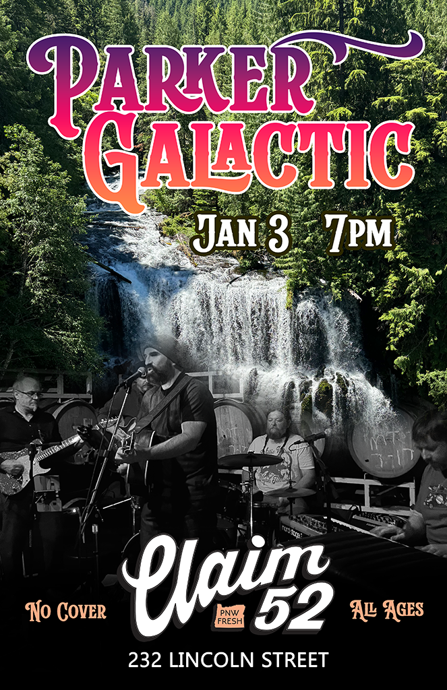
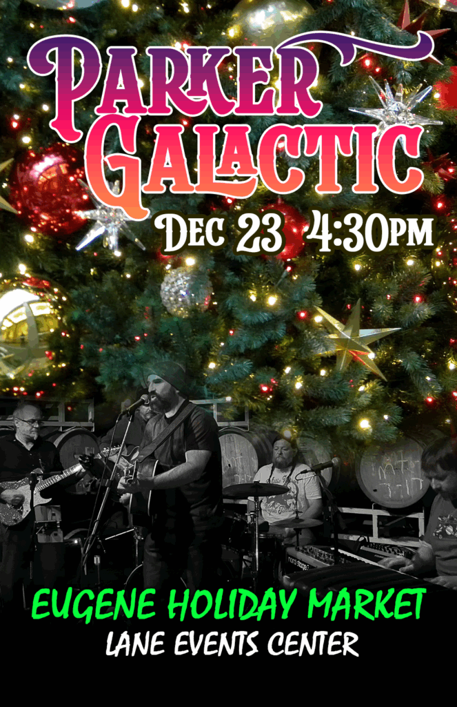
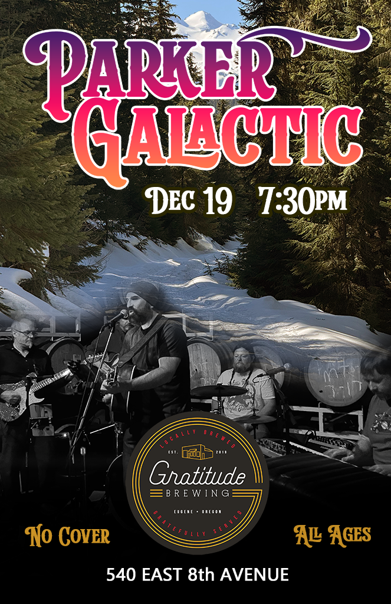
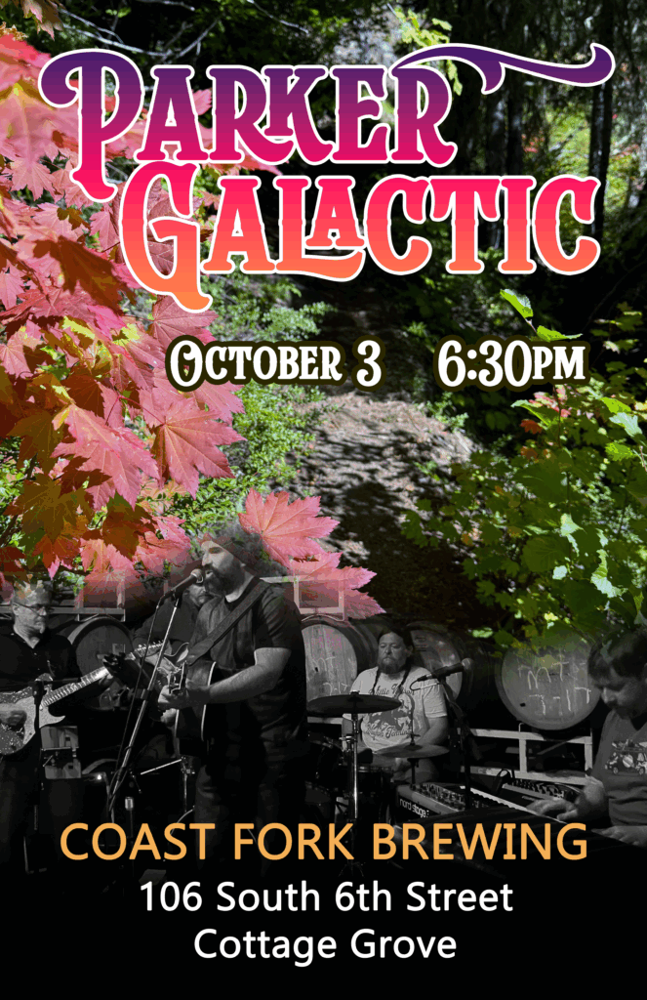
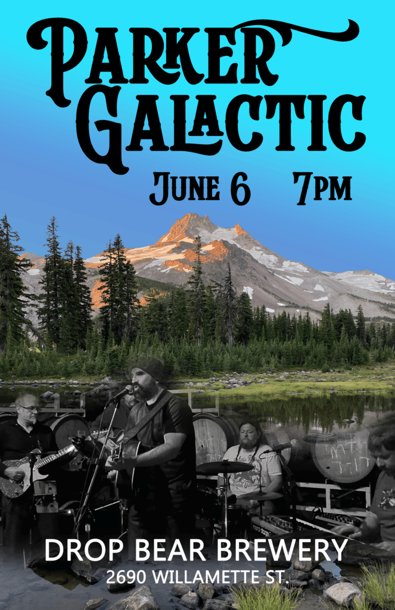
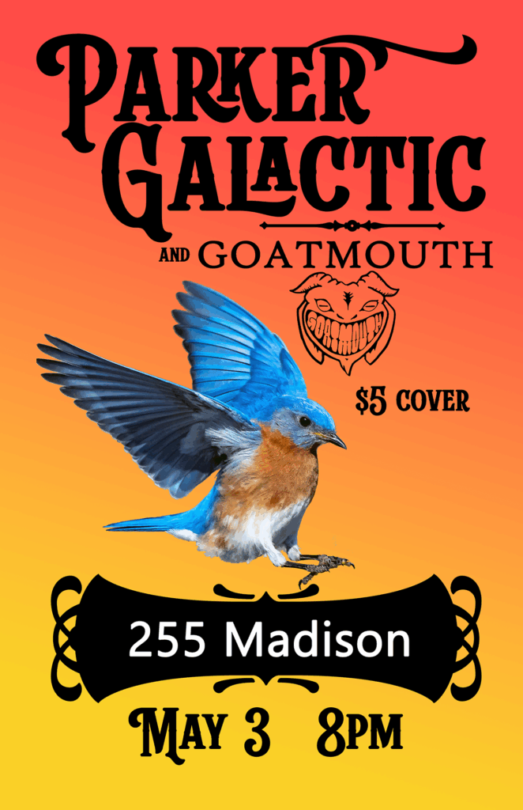

Indie Folk-Rock and Americana
Parker Galactic channels the spirit of the Pacific Northwest with a sound that rolls like a river and peaks like golden hour over the Cascades. Blending country, blues, psych, and folk-rock, their original songs tell the stories of drifters, lovers, wild places, and wide open spaces.
Parker Galactic is: Ed Parker (guitar, vocals), Anthony Forcellini (guitar, lap steel, vocals), Ryan Galas (bass), Josh Manders (keys, vocals), and Mike Clark (drums, vocals).

 Parker Galactic performing at the 2025 Eugene Holiday Market
Parker Galactic performing at the 2025 Eugene Holiday Market
Upcoming Shows

Saturday, April 18, 2026 at 6pm
Coast Fork Brewing
106 South 6th Street - Cottage Grove

Friday, May 15, 2026 at 7:30pm
Gratitude Brewing
540 E. 8th Ave - Eugene
Recordings
Bluebird Calling (Single)
Parker Galactic’s single “Bluebird Calling” is available on all streaming platforms. This original bluegrass-inspired single features acoustic guitar, lap steel, and mandolin. The single was written, produced, and recorded by Ed Parker. The single was mastered by Thaddeus Moore at Liquid Mastering.
Digital single available for purchase on BandCamp.
Pacific Wonderland (EP)
Parker Galactic’s five song EP titled “Pacific Wonderland” is available on all streaming platforms. Each track on the EP offers a distinct style while being rooted within the Americana and folk-rock genres. This album was heavily influenced by the likes of Jerry Garcia, Taj Mahal, Townes Van Zandt, Tom Petty, and Paul Simon. The songs on this EP were written, produced, and recorded by Ed Parker. Josh Manders is featured on piano on the "Rusty Shovel" track. The album was mastered by Thaddeus Moore at Liquid Mastering.
Digital Tracks and CDs Available
Digital tracks and a limited number of professionally made CDs are available for purchase on BandCamp.
Videos
Past Shows

January 3, 2026
Claim 52 Brewing

December 23, 2025
Eugene Holiday Market

December 19, 2025
Gratitude Brewing

October 3, 2025
Coast Fork Brewing

June 6, 2025
Drop Bear Brewery

May 3, 2025
255 Madison